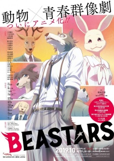

Demon Slayer

Descripción:
Demon Slayer (o Kimetsu no Yaiba) es un anime que comenzó su emisión el pasado 6 de abril con la dirección de Haruo Sotozaki y producción de Hikarou Kondo. Su trama nos pondrá en la vida de dos hermanos que sobreviven a los males de un Japón lejano, pero no tanto.
One Piece

Descripción:
One Piece trata sobre un chico, Monkey D.Luffy y sus aventuras en los peligrosos mares del mundo, este chico tiene un sueño, y este es encontrar el One Piece, el tesosro ma sgrande del mundo y así convertirse en el Rey de los Piratas, pero eso no lo puede hacer solo, necesita valiosos nakamas (Compañeros) que lo ayuden en esta búsqueda, y es aquí en donde empieza la historia.
BEASTARS
Descripción:
La historia se desarrolla en un mundo de animales antropomórficos civilizados con una división cultural entre carnívoros y herbívoros. Legoshi, un gran lobo gris, es un estudiante tímido y tranquilo de la Academia Cherryton, donde vive con varios estudiantes carnívoros, incluido su amigo labrador, Jack. Como miembro del club de teatro de la escuela, Legoshi trabaja como escenógrafo y apoya a los actores del club, encabezados por el alumno estrella Rouis, un ciervo rojo.